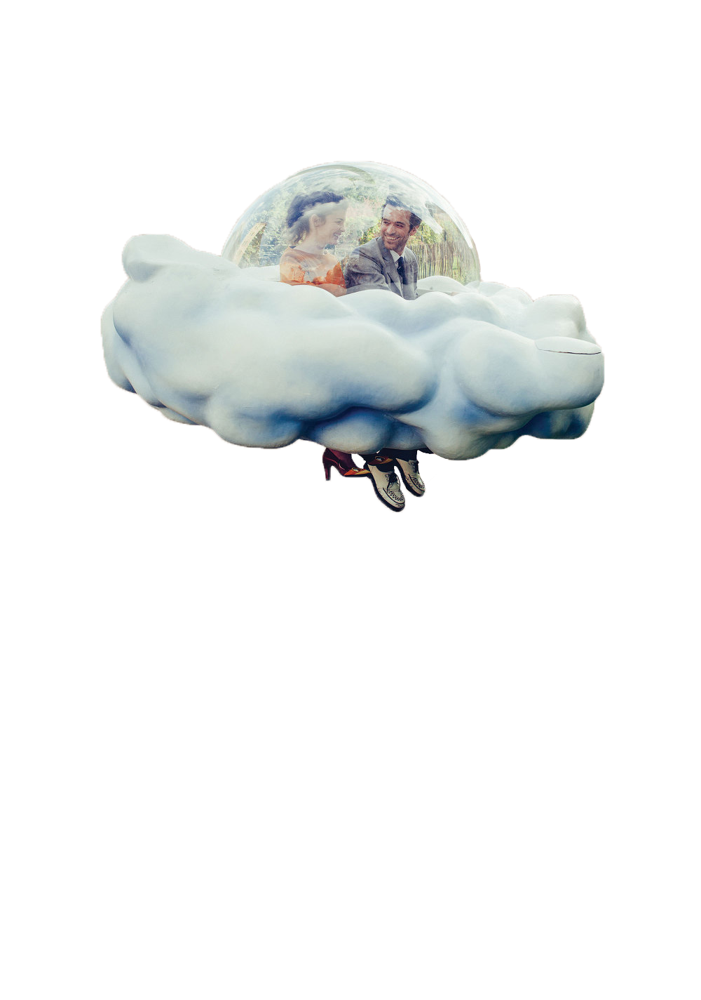

5<!doctype html>
<head>
	<title>Mood Indigo</title>
	<script src="./soundV.js"></script>
	<style>
		html,body,div,img{margin:0; padding:0;}
		/*이번엔 이미지를 넣어보겠습니다!!*/
		/*동그란 이미지를 쓸 것이라 Border-radius는 지웠습니다 필요없음!!*/
.button {
    background-color: #4CAF50; /* Green */
    border: none;
    color: white;
    padding: 16px 32px;
    text-align: center;
    text-decoration: none;
    display: inline-block;
    font-size: 16px;
    margin: 4px 2px;
    -webkit-transition-duration: 0.4s; /* Safari */
    transition-duration: 0.4s;
    cursor: pointer;
}

.button1 {
    background-color: white; 
    color: black; 
    border: 2px solid #4CAF50;
}

.button1:hover {
    background-color: #4CAF50;
    color: white;
}
		body{width: 1000px; 
			background: url('Mood.jpg'); 
			background-size: 1000px 1000px; 
			background-attachment: fixed;
    		background-position: center; 
    		background-repeat: no-repeat;}
		.circle{ width:800px; height:auto;
			position: absolute; left:calc(50% - 100px); top:300px;
			animation: Moving 8s linear infinite;
			/*애니메이션이름 Moving 8초동안 가속도없이 일정한 속도로 infinite(무한반복) 빙글빙글 돌아가게 해볼께요!!*/
		}
		@keyframes Moving{
			0%{ }
			100%{ transform: rotate(-360deg)}
		}
		.circle img{width:100%; height:auto;}
	</style>
</head>
<body>
	<button id="stopBut">stop</button>
	<button id="playBut">play</button>
	<button id="pauseBut">pause</button>
	<input id="audio_file" type="file" accept="audio/*" />

	<div class="circle" id="circle">
		
	</div>


	<script>
		var newSound = new SoundBH("Mood_Indigo.mp3",16);
	
		(function loop(){ 
 
			var vol = newSound.getGain() / 10; //볼륨값이 커서 10으로 나눔 
			
			//자 드디어 준비가 끝났습니다!! 볼륨을 동그라미의 크기에 대입!!
			circle.style.width = vol + "px";
			circle.style.height = vol + "px";
			circle.style.borderRadius = vol/2 + "px";
			circle.style.left = "calc(50% - " + (vol/2) + "px)";
			circle.style.top = 300 - (vol/2) + "px";

			//동그라미의 절반만큼 왼쪽, 위쪽으로 좌표를 옮겨줘야 동그라미가 제자리에서 사이즈가 바뀝니다.

			window.requestAnimationFrame(loop);	
		})();


		playBut.onclick = function(){ newSound.play();};	
		stopBut.onclick = function(){ newSound.stop();};
		pauseBut.onclick = function(){ newSound.pause();};
		audio_file.onchange = function(){
		  	newSound.change(URL.createObjectURL(this.files[0]));
		};
	</script>

</body>
